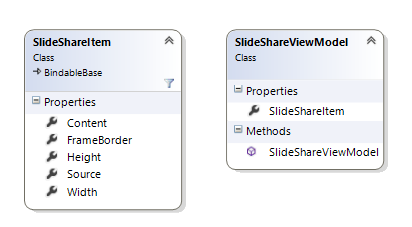

Slide Share Sample
Introduction
This sample shows how to display a presentation from SlideShare in XAML/C# project.
Building the Sample
You only need Visual Studio 2012 and Windows 8, both the RTM version.
Description
First start to create a class SlideShareItem that contains properties for define the layout of the presentation and the source (url for the presentation) and next create a view model for set in page's DataContext .

For display the presentation, i will use the WebView and i will call the NavigateToString method. This method allow to add a string which content can be HTML and/or Javascript. In this case i will add a Iframe with some properties defined.
Then add to a WebView the sizes and NavigateToString for to see the presentation.
var slideShareViewModel = new SlideShareViewModel();
DataContext = slideShareViewModel;
webView.Height = slideShareViewModel.SlideShareItem.Height+25;
webView.Width = slideShareViewModel.SlideShareItem.Width+25;
webView.NavigateToString(slideShareViewModel.SlideShareItem.Content);
var slideShareViewModel = new SlideShareViewModel(); DataContext = slideShareViewModel; webView.Height = slideShareViewModel.SlideShareItem.Height+25; webView.Width = slideShareViewModel.SlideShareItem.Width+25; webView.NavigateToString(slideShareViewModel.SlideShareItem.Content);
The string value added in NavigationToString will be
public string Content
{
get
{
return
string.Format(
@"<iframe width='{0}' height='{1}' src='{2}' frameborder='{3}'></iframe>",
this.Width,
this.Height,
this.Source,
this.FrameBorder);
}
}
public string Content { get { return string.Format( @"<iframe width='{0}' height='{1}' src='{2}' frameborder='{3}'></iframe>", this.Width, this.Height, this.Source, this.FrameBorder); } }
Result

Source Code Files
- SlideShareItem.cs contrains the SlideShareItem class that represent all definition to display the presentation.
- SlideShareModel.cs contains the SlideShareModel class that represent the view model to set in page.
Build the Sample
- Start Visual Studio Express 2012 for Windows 8 and select File > Open > Project/Solution.
- Go to the directory in which you unzipped the sample. Go to the directory named for the sample, and double-click the Visual Studio Express 2012 for Windows 8 Solution (.sln) file.
- Press F7 or use Build > Build Solution to build the sample.
Run the sample
To debug the app and then run it, press F5 or use Debug > Start Debugging. To run the app without debugging, press Ctrl+F5 or use Debug > Start Without Debugging.
More Information
Ask me on twitter @saramgsilva